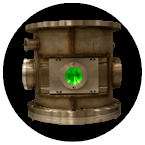
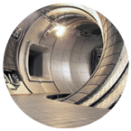
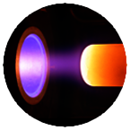

L'interaction Laser-Matière | Diagnostics de plasmas de bord de fusion thermonucléaire |
Dans le but de déterminer la composition élémentaire d'un échantillon, l'équipe analyse les plasmas induits par l'absorption d'une impulsion laser nanoseconde sur la surface de l'échantillon étudié. Cette analyse, réalisée à l'aide de diagnostics essentiellement spectroscopiques, concerne la dynamique du plasma depuis sa création jusqu'à sa recombinaison, ses écarts à l'équilibre thermodynamique local et ses propriétés radiatives. | Afin de déterminer les profils de température et de densité électroniques dans les 10 premiers centimètres du plasma de la machine de fusion thermonucléaire Tore-Supra située à Cadarache (Bouches du Rhône), l'équipe développe une technique de spectroscopie active par injection d'un faisceau d'hélium. Cette technique repose sur le couplage entre la réalisation expérimentale de l'injection et sa modélisation à l'aide d'un code prédisant la dynamique de l'injection. |
Procédés plasmas | Entrées Atmostphériques |
Afin d'accompagner les besoins énergétiques futurs, il convient d'envisager comment récupérer efficacement et proprement l'énergie disponible autour de nous. La gazéification de la biomasse (déchets verts) par plasma de dioxyde de carbone tente de répondre à cette double exigence en limitant qui plus est l'émission de gaz à effet de serre. | L'onde de choc générée lors de l'entrée d'une sonde spatiale dans une atmosphère planétaire donne naissance à un plasma très énergétique en contact avec la paroi de l'engin. La détermination des différents flux d'énergie permet de dimensionner au mieux le bouclier thermique. Pour cela il faut reproduire ce plasma en laboratoire et le modéliser en détail. |


Ce site a entièrement été élaboré par des étudiants de l'IUT de Rouen (76) en Services et Réseaux de Communication.
L'équipe plasma du laboratoire CORIA souhaite remercier :
- Marie Godard pour les vidéos et photos qui alimentent le site,
- Lénaïc Moroni pour la création du site web et
- Thomas Richard pour l'inclusion du web-docu.
Nous remercions également les encadrants :
- Gregory Chaudemanche pour avoir supervisé ce projet et
- Olivier Gautier pour son implication lors des tournages.
MG LM TR © - Tous droits réservés - Administration